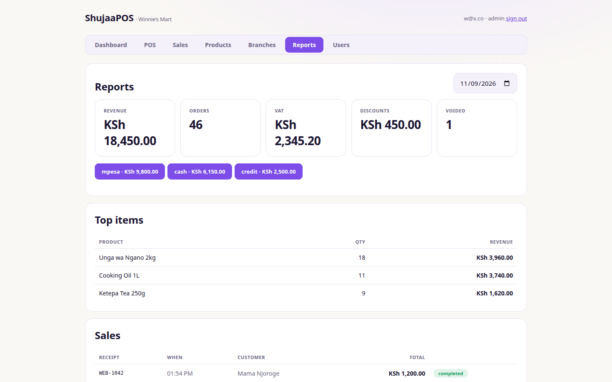

Cash Control at the Till: Reconciling Shifts
ShujaaPOS · November 2026 · 5 min read
Most shop money doesn't vanish through clever theft. It leaks through honest sloppiness: a float that was never written down, change given wrong, a drawer counted by memory. A shift system fixes this with simple maths.

How a shift works
- The cashier opens a shift and declares the opening float: the change money in the drawer. KSh 1,000, say.
- Sales happen through the day. The system knows the cash total it should have collected.
- At closing, the cashier counts what's physically in the drawer and enters it.
- The system shows three numbers: float, expected (float plus cash sales), and the difference between expected and counted.
That difference is everything. If it's zero, you file it and go home. If it's short, you have a precise, dated figure to discuss instead of a vague suspicion. If it's over, someone may have short-changed a customer, which is a different problem worth catching.
Why it works without drama
The cashier declares the float themselves and counts the drawer themselves. You're not accusing anyone; you're both just reading the same arithmetic. Staff usually appreciate it too, since a clean reconciliation is also proof they didn't take anything.
Habits that keep it clean
- Open and close shifts at the same times daily. An unclosed shift hides a whole day's cash.
- Never let a cashier enter the closing count unwitnessed if amounts keep coming up short.
- Petty cash taken from the drawer should be written down when taken, not reconstructed at close.
Try ShujaaPOS free